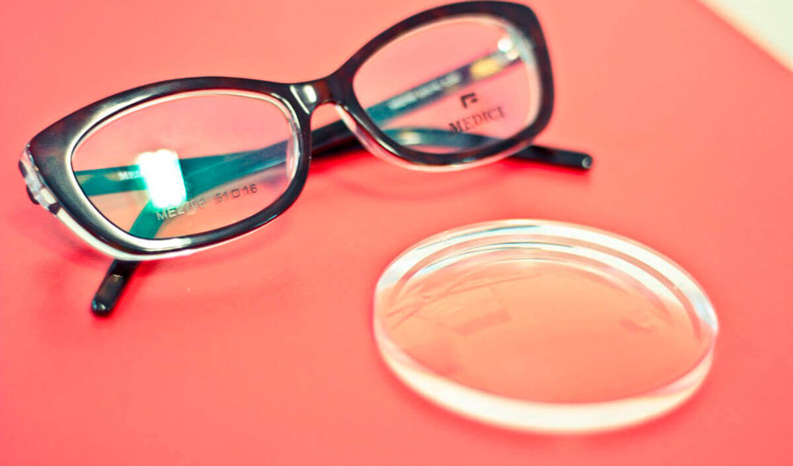

Четири начина, по които лошото зрение може да повлияе на ученето при деца
Върнете зрението си на 100% и не ослепявайте
Проблемът със зрителната острота днес става един от най-важните за хората от всички възрасти. Възможно ли е да върнете зрението си и да се сбогувате с очилата завинаги? Вярно ли е, че след операция на очите има вероятност да ослепеете? И едното, и другото, е вярно. Нека да видим как да върнем зрението без необратими последици.
Доброто зрение е важно
Очите са орган, който се нуждае от грижи също толкова, колкото и другите. Ако не се грижите за тях, с течение на времето ситуацията ще се влоши: зрението ще става по-зле, ще се появят очни заболявания.
Ако използвате контактни лещи или очила, с течение на времето ситуацията неизбежно ще се влоши. Причината за това е отслабването на очните мускули. Носенето на очила или други помощни средства допълнително отпуска вече отслабената мускулатура.
Зрението пада - дебелината на окулярите се увеличава и така година след година, ако не прибегнете до пълно лечение.

Как да си върнем зрението
Сред съществуващите начини за възстановяване на зрението, помислете за тези, които гарантират резултат 100%. Има само две — лазерна корекция и взимане на подходящи лекарства.
Лазерната корекция е бърз, в 80 случая от 100 е ефективен, но скъп и не винаги безопасен начин да си върнеш ясната картинка.
За съжаление, дори опитните хирурзи не дават абсолютна гаранция, че след операцията, вместо да възстановите зрението, няма да го загубите напълно.
Качеството и живота на лазерното оборудване, опитът на лекаря, неточната диагноза и дори някоя малката особеност на организма могат да повлияят неблагоприятно на резултата от операцията.
Малко по-дълъг, но напълно безопасен начин за възстановяване на зрението е вземането на лекарства за възстановяване на тонуса на очната мускулатура. От нейното състояние зависи как виждаме този свят.
Към днешна дата в Европа има едно лекарство, което е минало клиничните изследвания и е доказало ефективността си на практика — .
В състава му влизат максимално допустимо количество тонизиращи вещества на растителна основа, всяка от които е насочена към премахване на очните заболявания, предотвратяване на слепотата и възстановяване на ясното зрение.

За една година от съществуването си лекарството даде възможност на повече от 100 хиляди души да свалят очилата си и да се откажат завинаги от лещите.
Създаването му отне повече от 10 години. Още 4 години учените похарчиха за провеждане на клинични изследвания.
Колосалната ефективност на лекарството се дължи на състава му, който няма аналози, който включва екстракти от рауволфия, шикша, морско грозде и акулова мазнина.
Важна роля в създаването на капсулите изигра метода на студената водна екстракция, който позволи напълно да се запази биохимичният състав на витамините.
Активните вещества на лекарството могат да повишат нивото на витамините, необходими за зрението, до здравословните стойности за 2-4 седмици. През това време балансът на микроелементите, отговорни за зрението, се изравнява.
Това води до естественото стабилизиране на очното налягане, а също така тонизира мускулите на окото, укрепва ретината и изравнява зрението до единица.
От къде може да се купи
Производителят на лекарството умишлено отказа да продава чрез аптечните мрежи, за да предотврати фалшифицирането на продукта. може да бъде закупен единствено от сайта на производителя, където до 30.04.2020 има 50% намаление.
Ако срещнете в аптеката, съобщете за това на горещата линия на сайта на производителя. Пазете зрението си.
Еее... буквално преди няколко дни го видях в аптеката.…
Този е фалшив, позвънете на номера на сайта и кажете адреса на аптеката. И аз бях така се излъгах, дори купих, изпих целия курс, без резултат. Обадих се на горещата линия за да се оплача и разбрах, че сама съм си виновна. След шест месеца изпих оригинала и тогава само разбрах каква е разликата. С истински зрението ми напълно се върна!
Поставила ми отлепена ретина. Беше ми много страшно. Разбира се, първото нещо, което ми предложиха лекарите, беше да се оперирам. За щастие се отказах. Изпих курс с и никаква операция не ми потрябва.
Това е някаква фантастика. Наистина ли така работи?
Лично аз и много мои познати пихме това лекарство. Мога да заявя с цялата си отговорност, че той 100% работи.
Вече една седмица взимам и зрението се подобри с единица!
Статията е много актуална сега, всички с компютри работим. Трябва да внимаваш за зрението си.
И аз искам да оставя отзив. Притесняваше ме далекогледство свързано с възрастта, имаше подозрения за появата на катаракта. Не мога да преодолея страха от операцията: чувала съм много за тежки усложнения. Лекарството ми помогна значително да си подобря зрението и премахна заплахата от катаракта за един курс.
Зная лично хора, чиято операция на очите е минала зле. Преди това сам спестявах за лазерна операция, после реших, че не мога да рискувам така, все пак това са очи... поръчах си , надявам се, че ще ми помогне.
Ще Ви помогне, не се съмнявайте. Главното е, да следвате указанията на специалиста (ще бъдете консултирани преди изпращането). Аз съм жив пример за това, че зрението може да се върне без операция! Не мога да Ви опиша колко съм щастлива да видя ясна картинка, да не присвивам очи и да изхвърля най-накрая тези износени очила!